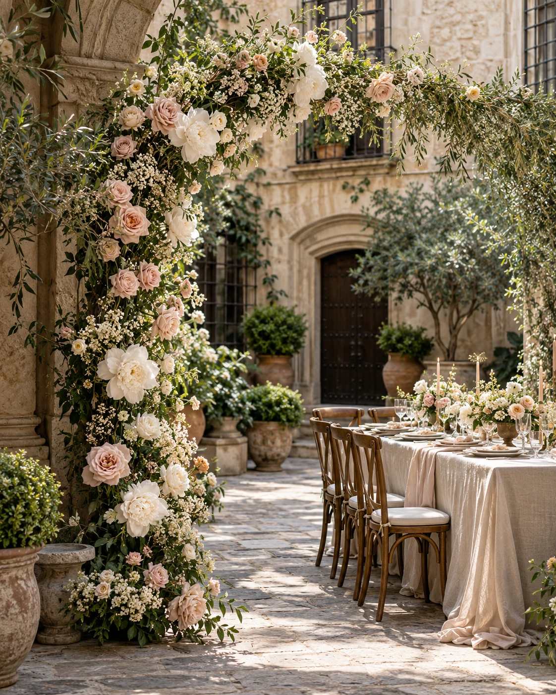
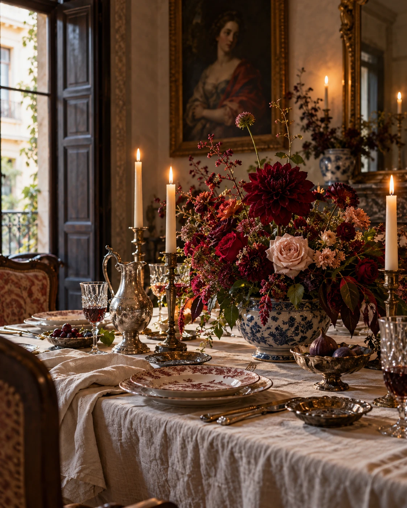
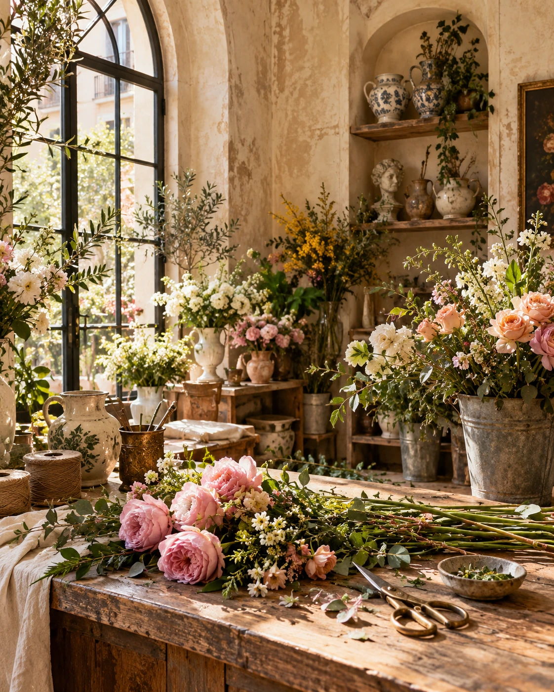
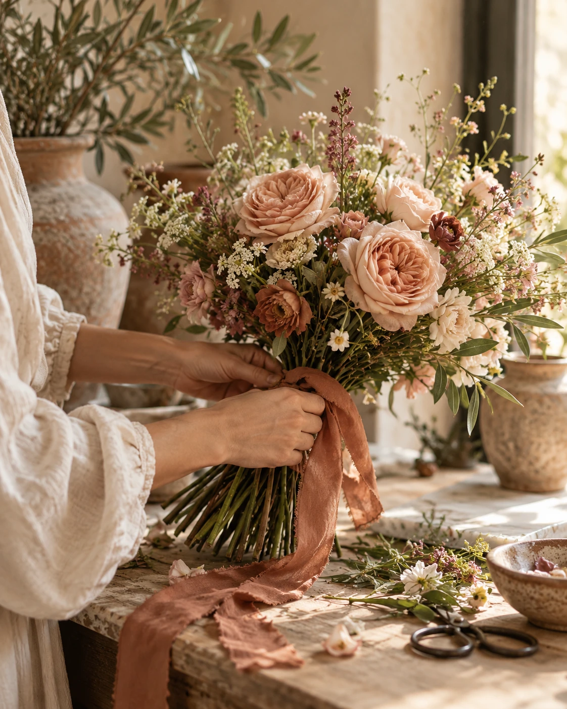

Bodas
Un diseño floral para un día único.
Diseños florales que acompañan los momentos importantes y los pequeños también.
flores, personas
y lugares
Un jardín que respira. Entre hojas, luz y flores, cada estación cuenta su historia.
Flores de temporada, materiales nobles y una manera pausada de crear. Entre Flores es un pequeño universo inspirado en los patios y la luz de Madrid.
Madrid, España · Un proyecto de estudio floral. Descubre la colección o compón tu propio ramo en nuestro atelier.
Cada composición puede guardarse en tu navegador y exportarse como recuerdo. Esta experiencia es un portfolio: no procesa pagos ni pedidos reales.
Composiciones que hablan por sí solas. Flores de temporada, reunidas para inspirar.
Colección floral original · Precios orientativos · Proyecto de diseño
Flores para acompañar los espacios y los momentos que importan.

Un diseño floral para un día único.

Celebraciones con un carácter propio.

Flores para lugares que cuentan historias.

Una composición creada a tu manera.
Entre Flores nace de una idea sencilla: acercar la belleza de las flores a lo cotidiano. Nos inspiran la luz de Madrid, los jardines que crecen sin prisa y las historias de quienes los habitan.